Conheça a LANAP
A Liga Acadêmica de Neurociência Aplicada é a liga de neurociência do curso de Medicina da UniBH Vespasiano: formação, prática, pesquisa e comunidade.
- 01
Programa Formativo
Aulas e discussões sobre as bases da neurociência, com docentes da instituição e de instituições parceiras.
- 02
Programa Imersivo
Preparação para a prática, como a paramentação cirúrgica, rumo a vivências supervisionadas.
- 03
Produção Científica
Grupos que partem de uma pergunta, leem criticamente as evidências e produzem trabalhos com orientação docente.
- 04
Núcleo Cultural
A ciência da liga em diálogo com a comunidade.
aprovados para apresentação no IV Encontro em Neurociências da UFMG, todos de ligantes da LANAP.

Não se esqueça de ler o edital
Ele explica quem pode participar, o que enviar e como será a avaliação.
Copie o link e abra no navegador
O formulário pede login com uma conta Google para enviar os arquivos. Dentro do WhatsApp ou do Instagram isso costuma falhar.
- Toque em Copiar link.
- Abra o Chrome ou o Safari.
- Cole o link na barra de endereço e entre com sua conta Google.
- Anexe a carta de intenção e o currículo Lattes em PDF e envie.
Dúvidas: fasehlanap@gmail.com · Instagram @lanap.faseh